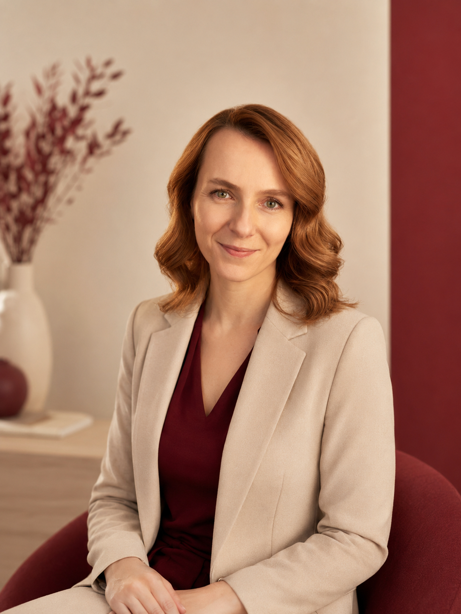
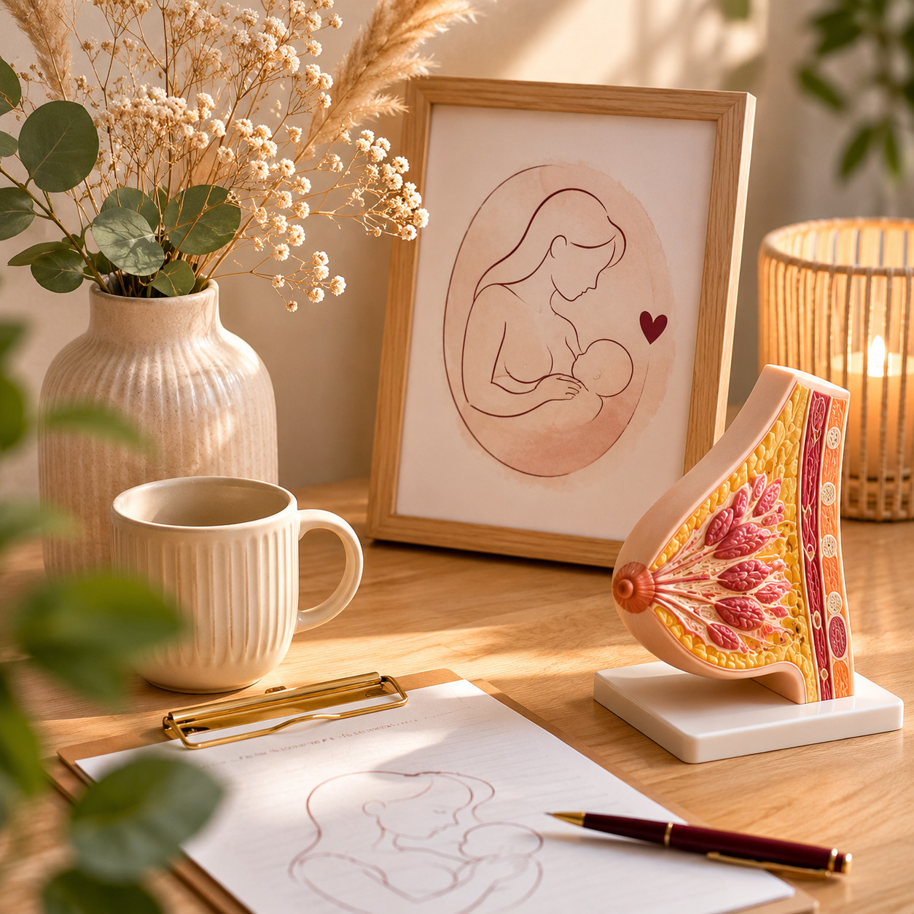
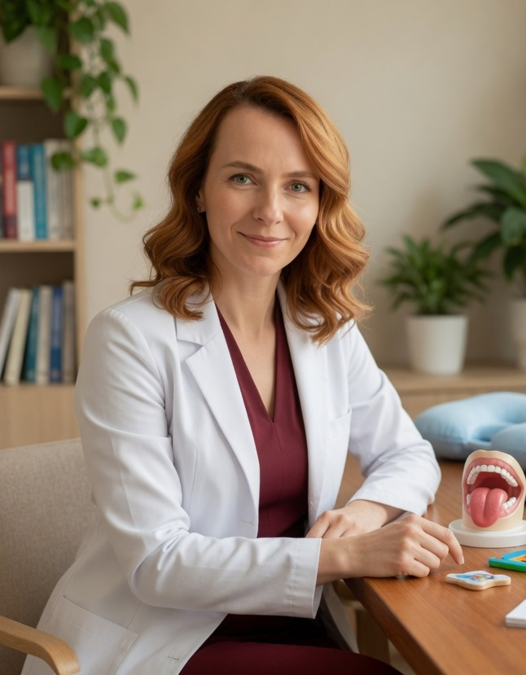
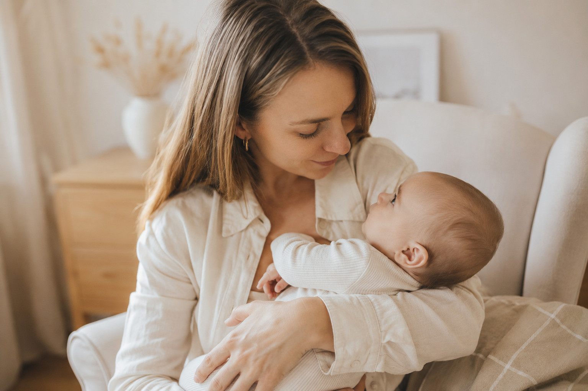
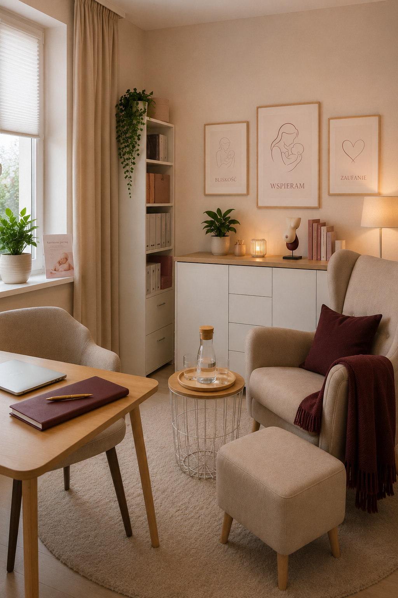

Specjalistyczna opieka neurologopedyczna dla niemowląt z trudnościami w karmieniu oraz wsparcie dla mam karmiących. Pracuję spokojnie, indywidualnie i z troską — od pierwszych dni życia Twojego dziecka.
„Każde dziecko zasługuje na spokojny, bezpieczny start — od pierwszego karmienia."
— mgr Katarzyna Puchała

Jestem neurologopedą klinicznym i specjalistą wczesnej interwencji. Pracuję z noworodkami, niemowlętami oraz dziećmi z wyzwaniami neurologicznymi i genetycznymi — od pierwszych dni życia.
W terapii kieruję się spokojnym, indywidualnym podejściem dostosowanym do potrzeb dziecka i jego rodziny. Uważam, że rodzic jest kluczowym uczestnikiem terapii — dlatego zawsze wyjaśniam co robię i dlaczego.
Gabinet prowadzę w Bilczy koło Kielc. Przyjmuję pacjentów z Kielc, gminy Morawica i okolicznych miejscowości województwa świętokrzyskiego.
Systematyczne doskonalenie warsztatu terapeutycznego — certyfikowane kursy, szkolenia, konferencje i uprawnienia zdobywane od 2018 roku.



Specjalistyczna pomoc dla niemowląt i dzieci — od pierwszych dni życia, w spokojnej i bezpiecznej atmosferze.
Diagnoza i terapia trudności z ssaniem, połykaniem i koordynacją ssanie-połykanie-oddech. Praca z wcześniakami i noworodkami z niskim napięciem mięśniowym.
Od 1. dnia życiaPomoc dla mam karmiących piersią — trudności z przystawieniem, ból, niedobór pokarmu, karmienie po cesarskim cięciu. Ocena techniki i wskazówki praktyczne.
Dla mam karmiącychTerapia zaburzeń połykania u niemowląt i dzieci. Praca z rozszczepem podniebienia, ankyloglosją i anomaliami anatomicznymi jamy ustnej.
Diagnoza i terapiaTerapia dzieci z zespołem Downa, porażeniem mózgowym i innymi wyzwaniami neurologicznymi. Ścisła współpraca z neurologiem i rehabilitantem.
Wczesna interwencjaPraca z napięciem mięśni twarzy i języka. Stymulacja orofacjalna, masaż dziąseł, elektrostymulacja mięśni twarzy metodą VitalStim.
Terapia manualnaDiagnoza i terapia opóźnienia mowy u dzieci powyżej 12. miesiąca życia. Praktyczne wskazówki i ćwiczenia dla rodziców do stosowania w domu.
Dzieci 1–6 latBez presji i pośpiechu — w atmosferze pełnego bezpieczeństwa.
Poznaję historię rozwoju dziecka, trudności i oczekiwania rodziny. To ważna część procesu diagnostycznego.
Delikatna ocena funkcji ssania, połykania i oddychania — obserwuję karmienie na żywo lub reakcje komunikacyjne.
Określam przyczyny trudności, oceniam napięcie mięśniowe, odruchy oralne i poziom rozwoju mowy.
Rodzic otrzymuje jasne wskazówki, ćwiczenia do domu i konkretny plan kolejnych kroków terapii.
Przyjmuję dzieci od 1. dnia życia — noworodki, niemowlęta, przedszkolaki i uczniów.
Transparentność jest fundamentem naszej współpracy. Narzędzia i metody terapeutyczne wliczone w cenę sesji.
Możliwe wystawienie faktury VAT (ulga rehabilitacyjna). Pytania? Napisz do mnie.
Zweryfikowane opinie rodzin z Kielc, Morawicy i okolic.
Bardzo profesjonalne i spokojne podejście do dziecka. Już po kilku spotkaniach widoczna ogromna poprawa. Pani Katarzyna rozwiała wszystkie nasze wątpliwości i obawy.
Ogromna wiedza i cierpliwość. Czuliśmy się zaopiekowani od pierwszej wizyty. Nikt wcześniej tak dokładnie nie wyjaśnił nam co dolega naszemu synowi.
Najlepsza decyzja jako mama. Córka czuła się komfortowo od samego początku. Atmosfera gabinetu jest wyjątkowa — spokój i profesjonalizm w jednym.
Wypełnij formularz lub zadzwoń. Odpowiadam zwykle tego samego dnia.
Jeśli masz pytania dotyczące rozwoju dziecka, karmienia lub terapii — jestem tu dla Ciebie. Razem dobierzemy najlepszą formę wsparcia.